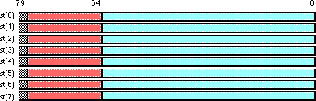
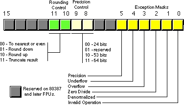
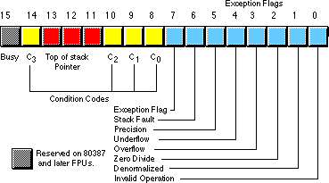
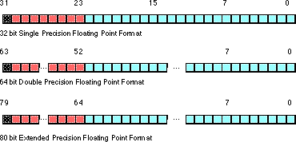
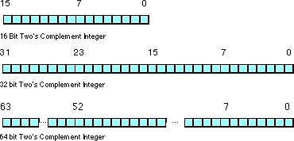
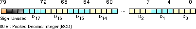

|
Table of Content | Chapter Fourteen (Part 4) |
|
Table of Content | Chapter Fourteen (Part 4) |
| CHAPTER
FOURTEEN: FLOATING POINT ARITHMETIC (Part 3) |
|
| 14.4 -
The 80x87 Floating Point Coprocessors 14.4.1 - FPU Registers 14.4.1.1 - The FPU Data Registers |
14.4.1.2
- The FPU Control Register 14.4.1.3 - The FPU Status Register 14.4.2 - FPU Data Types |
| 14.4 The 80x87 Floating Point Coprocessors | |
When the 8086 CPU first appeared in the late 1970's, semiconductor technology was not to the point where Intel could put floating point instrutions directly on the 8086 CPU. Therefore, they devised a scheme whereby they could use a second chip to perform the floating point calculations - the floating point unit (or FPU)[6]. They released their original floating point chip, the 8087, in 1980. This particular FPU worked with the 8086, 8088, 80186, and 80188 CPUs. When Intel introduced the 80286 CPU, they released a redesigned 80287 FPU chip to accompany it. Although the 80287 was compatible with the 80386 CPU, Intel designed a better FPU, the 80387, for use in 80386 systems. The 80486 CPU was the first Intel CPU to include an on-chip floating point unit. Shortly after the release of the 80486, Intel introduced the 80486sx CPU that was an 80486 without the built-in FPU. To get floating point capabilities on this chip, you had to add an 80487 chip, although the 80487 was really nothing more than a full-blown 80486 which took over for the "sx" chip in the system. Intel's Pentium/586 chips provide a high-performance floating point unit directly on the CPU. There is no floating point coprocessor available for the Pentium chip.
Collectively, we will refer to all these chips as the 80x87 FPU. Given the obsolesence of the 8086, 80286, 8087, and 80287 chips, this text will concentrate on the 80387 and later chips. There are some differences between the 80387/80486/Pentium floating point units and the earlier FPUs. If you need to write code that will execute on those earlier machines, you should consult the appropriate Intel documentation for those devices.
The 80x87 FPUs add 13 registers to the 80386 and later processors: eight floating point data registers, a control register, a status register, a tag register, an instruction pointer, and a data pointer. The data registers are similar to the 80x86's general purpose register set insofar as all floating point calculations take place in these registers. The control register contains bits that let you decide how the 80x87 handles certain degenerate cases like rounding of inaccurate computations, control precision, and so on. The status register is similar to the 80x86's flags register; it contains the condition code bits and several other floating point flags that describe the state of the 80x87 chip. The tag register contains several groups of bits that determine the state of the value in each of the eight general purpose registers. The instruction and data pointer registers contain certain state information about the last floating point instruction executed. We will not consider the last three registers in this text, see the Intel documentation for more details.
14.4.1.1 The FPU Data Registers
The 80x87 FPUs provide eight 80 bit data registers organized as a stack. This is a significant departure from the organization of the general purpose registers on the 80x86 CPU that comprise a standard general-purpose register set. Intel refers to these registers as ST(0), ST(1), ..., ST(7). Most assemblers will accept ST as an abbreviation for ST(0).
The biggest difference between the FPU register set and the
80x86 register set is the stack organization. On the 80x86 CPU, the ax
register is always the ax register, no matter what happens. On the 80x87,
however, the register set is an eight element stack of 80 bit floating point values (see
the figure below). ST(0) refers to the item on the top of the stack, ST(1) refers to the
next item on the stack, and so on. Many floating point instructions push and pop items on
the stack; therefore, ST(1) will refer to the previous contents of ST(0) after you push
something onto the stack. It will take some thought and practice to get used to the fact
that the registers are changing under you, but this is an easy problem to overcome.

14.4.1.2 The FPU Control Register
When Intel designed the 80x87 (and, essentially, the IEEE floating point standard), there were no standards in floating point hardware. Different (mainframe and mini) computer manufacturers all had different and incompatible floating point formats. Unfortunately, much application software had been written taking into account the idiosyncrasies of these different floating point formats. Intel wanted to designed an FPU that could work with the majority of the software out there (keep in mind, the IBM PC was three to four years away when Intel began designing the 8087, they couldn't rely on that "mountain" of software available for the PC to make their chip popular). Unfortunately, many of the features found in these older floating point formats were mutually exclusive. For example, in some floating point systems rounding would occur when there was insufficient precision; in others, truncation would occur. Some applications would work with one floating point system but not with the other. Intel wanted as many applications as possible to work with as few changes as possible on their 80x87 FPUs, so they added a special register, the FPU control register, that lets the user choose one of several possible operating modes for the 80x87.
The 80x87 control register contains 16 bits organized as shown below:

Bit 12 of the control register is only present on the 8087 and 80287 chips. It controls how the 80x87 responds to infinity. The 80387 and later chips always use a form of infinitly known and affine closure because this is the only form supported by the IEEE 754/854 standards. As such, we will ignore any further use of this bit and assume that it is always programmed with a one.
Bits 10 and 11 provide rounding control according to the following values:
| Bits 10 & 11 | Function |
|---|---|
| 00 | To nearest or even |
| 01 | Round down |
| 10 | Round up |
| 11 | Truncate |
The "00" setting is the default. The 80x87 rounds values above one-half of the least significant bit up. It rounds values below one-half of the least significant bit down. If the value below the least significant bit is exactly one-half the least significant bit, the 80x87 rounds the value towards the value whose least significant bit is zero. For long strings of computations, this provides a reasonable, automatic, way to maintain maximum precision.
The round up and round down options are present for those computations where it is important to keep track of the accuracy during a computation. By setting the rounding control to round down and performing the operation, the repeating the operation with the rounding control set to round up, you can determine the minimum and maximum ranges between which the true result will fall.
The truncate option forces all computations to truncate any excess bits during the computation. You will rarely use this option if accuracy is important to you. However, if you are porting older software to the 80x87, you might use this option to help when porting the software.
Bits eight and nine of the control register control the precision during computation. This capability is provided mainly to allow compatbility with older software as required by the IEEE 754 standard. The precision control bits use the following values:
Bits 8 & 9 |
Precision Control |
|---|---|
| 00 | 24 bits |
| 01 | Reserved |
| 10 | 53 bits |
| 11 | 64 bits |
For modern applications, the precision control bits should always be set to "11" to obtain 64 bits of precision. This will produce the most accurate results during numerical computation.
Bits zero through five are the exception masks. These are similar to the interrupt enable bit in the 80x86's flags register. If these bits contain a one, the corresponding condition is ignored by the 80x87 FPU. However, if any bit contains zero, and the corresponding condition occurs, then the FPU immediately generates an interrupt so the program can handle the degenerate condition.
Bit zero corresponds to an invalid operation error. This generally occurs as the result of a programming error. Problem which raise the invalid operation exception include pushing more than eight items onto the stack or attempting to pop an item off an empty stack, taking the square root of a negative number, or loading a non-empty register.
Bit one masks the denormalized interrupt which occurs whenever you try to manipulate denormalized values. Denormalized values generally occur when you load arbitrary extended precision values into the FPU or work with very small numbers just beyond the range of the FPU's capabilities. Normally, you would probably not enable this exception.
Bit two masks the zero divide exception. If this bit contains zero, the FPU will generate an interrupt if you attempt to divide a nonzero value by zero. If you do not enable the zero division exception, the FPU will produce NaN (not a number) whenever you perform a zero division.
Bit three masks the overflow exception. The FPU will raise the overflow exception if a calculation overflows or if you attempt to store a value which is too large to fit into a destination operand (e.g., storing a large extended precision value into a single precision variable).
Bit four, if set, masks the underflow exception. Underflow occurs when the result is too small to fit in the desintation operand. Like overflow, this exception can occur whenever you store a small extended precision value into a smaller variable (single or double precision) or when the result of a computation is too small for extended precision.
Bit five controls whether the precision exception can occur. A precision exception occurs whenever the FPU produces an imprecise result, generally the result of an internal rounding operation. Although many operations will produce an exact result, many more will not. For example, dividing one by ten will produce an inexact result. Therefore, this bit is usually one since inexact results are very common.
Bits six and thirteen through fifteen in the control register are currently undefined and reserved for future use. Bit seven is the interrupt enable mask, but it is only active on the 8087 FPU; a zero in this bit enables 8087 interrupts and a one disables FPU interrupts.
The 80x87 provides two instructions, FLDCW (load control word) and FSTCW (store control word), that let you load and store the contents of the control register. The single operand to these instructions must be a 16 bit memory location. The FLDCW instruction loads the control register from the specified memory location, FSTCW stores the control register into the specified memory location.
14.4.1.3 The FPU Status Register
The FPU status register provides the status of the coprocessor at the instant you read it. The FSTSW instruction stores the16 bit floating point status register into the mod/reg/rm operand. The status register s a 16 bit register, its layoutis

Bits zero through five are the exception flags. These bits are appear in the same order as the exception masks in the control register. If the corresponding condition exists, then the bit is set. These bits are independent of the exception masks in the control register. The 80x87 sets and clears these bits regardless of the corresponding mask setting.
Bit six (active only on 80386 and later processors) indicates a stack fault. A stack fault occurs whenever there is a stack overflow or underflow. When this bit is set, the C1 condition code bit determines whether there was a stack overflow (C1=1) or stack underflow (C1=0) condition.
Bit seven of the status register is set if any error condition bit is set. It is the logical OR of bits zero through five. A program can test this bit to quickly determine if an error condition exists.
Bits eight, nine, ten, and fourteen are the coprocessor condition code bits. Various instructions set the condition code bits as shown in the following table:
| Instruction | Condition Code Bits C3 C2 C1 C0 |
Condition |
|---|---|---|
| fcom, fcomp, fcompp, ficom, ficomp | 0 0 X 0 0 0 X 1 1 0 X 0 1 1 X 1 |
ST > source ST < source ST = source ST or source undefined |
| ftst | 0 0 X 0 0 0 X 1 1 0 X 0 1 1 X 1 |
ST is positive ST is negative ST is zero (+ or -) ST is uncomparable |
| fxam | 0 0 0 0 0 0 1 0 0 1 0 0 0 1 1 0 1 0 0 0 1 0 1 0 1 1 0 0 1 1 1 0 0 0 0 1 0 0 1 1 0 1 0 1 0 1 1 1 1 X X 1 |
+ Unnormalized -Unnormalized +Normalized -Normalized +0 -0 +Denormalized -Denormalized +NaN -NaN +Infinity -Infinity Empty register |
| fucom, fucomp, fucompp | 0 0 X 0 0 0 X 1 1 0 X 0 1 1 X 1 |
ST > source ST < source ST = source Unorder |
| X = Don't care |
| Insruction(s) | C0 | C3 | C2 | C1 |
|---|---|---|---|---|
| fcom, fcomp, fcmpp, ftst, fucom, fucomp, fucompp, ficom, ficomp | Result of comparison. See table above. |
Result of comparison. See table above. |
Operand is not comparable. | Result of comparison (see table above) or stack overflow/underflow (if stack exception bit is set ). |
| fxam | See previous table. | See previous table. | See previous table. | Sign of result, or stack overflow/underflow (if stack exception bit is set ). |
| fprem, fprem1 | Bit 2 of remainder | Bit 0 of remainder | 0- reduction done. 1- reduction incomplete. |
Bit 1 of remainder or stack overflow/underflow (if stack exception bit is set ). |
| fist, fbstp, frndint, fst, fstp, fadd, fmul, fdiv, fdivr, fsub, fsubr, fscale, fsqrt, fpatan, f2xm1, fyl2x, fyl2xp1 | Undefined | Undefined | Undefined | Round up occurred or stack overflow/underflow (if stack exception bit is set ). |
| fptan, fsin, fcos, fsincos | Undefined | Undefined | 0- reduction done. 1- reduction incomplete. |
Round up occurred or stack overflow/underflow (if stack exception bit is set ). |
| fchs, fabs, fxch, fincstp, fdecstp, constant loads, fxtract, fld, fild, fbld, fstp (80 bit) | Undefined | Undefined | Undefined | Zero result or stack overflow/underflow (if stack exception bit is set ). |
| fldenv, fstor | Restored from memory operand. | Restored from memory operand. | Restored from memory operand. | Restored from memory operand. |
| fldcw, fstenv, fstcw, fstsw, fclex | Undefined | Undefined | Undefined | Undefined |
| finit, fsave | Cleared to zero. | Cleared to zero. | Cleared to zero. | Cleared to zero. |
Bits 11-13 of the FPU status register provide the register number of the top of stack. During computations, the 80x87 adds (modulo eight) the logical register numbers supplied by the programmer to these three bits to determine the physical register number at run time.
Bit 15 of the status register is the busy bit. It is set whenever the FPU is busy. Most programs will have little reason to access this bit.
The 80x87 FPU supports seven different data types: three integer types, a packed decimal type, and three floating point types. Since the 80x86 CPUs already support integer data types, these are few reasons why you would want to use the 80x87 integer types. The packed decimal type provides a 17 digit signed decimal (BCD) integer. However, we are avoiding BCD arithmetic in this text, so we will ignore this data type in the 80x87 FPU. The remaining three data types are the 32 bit, 64 bit, and 80 bit floating point data types we've looked at so far. The 80x87 data types appear in the following figures:



The 80x87 FPU generally stores values in a normalized format. When a floating point number is normalized, the H.O. bit is always one. In the 32 and 64 bit floating point formats, the 80x87 does not actually store this bit, the 80x87 always assumes that it is one. Therefore, 32 and 64 bit floating point numbers are always normalized. In the extended precision 80 bit floating point format, the 80x87 does not assume that the H.O. bit of the mantissa is one, the H.O. bit of the number appears as part of the string of bits.
Normalized values provide the greatest precision for a given number of bits. However, there are a large number of non-normalized values which we can represent with the 80 bit format. These values are very close to zero and represent the set of values whose mantissa H.O. bit is not zero. The 80x87 FPUs support a special form of 80 bit known as denormalized values. Denormalized values allow the 80x87 to encode very small values it cannot encode using normalized values, but at a price. Denormalized values offer less bits of precision than normalized values. Therefore, using denormalized values in a computation may introduce some slight inaccuracy into a computation. Of course, this is always better than underflowing the denormalized value to zero (which could make the computation even less accurate), but you must keep in mind that if you work with very small values you may lose some accuracy in your computations. Note that the 80x87 status register contains a bit you can use to detect when the FPU uses a denormalized value in a computation.
[6] Intel has also refered to this device as the Numeric Data Processor (NDP), Numeric Processor Extension (NPX), and math coprocessor.
|
Table of Content | Chapter Fourteen (Part 4) |
Chapter Fourteen: Floating Point
Arithmetics (Part 3)
28 SEP 1996